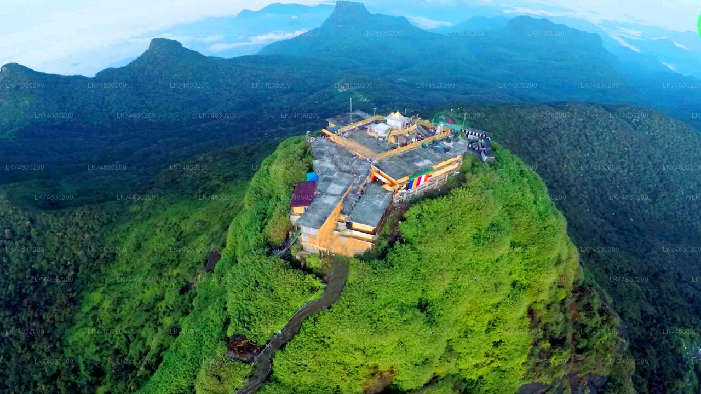
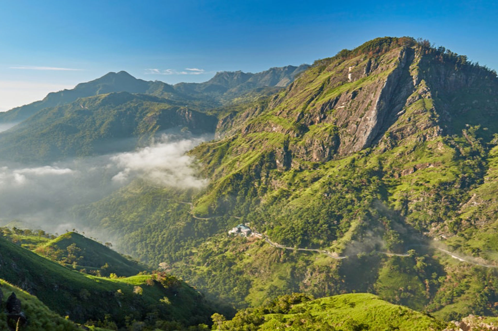

Find Your Vibe
Little Adam's Peak is Ella's most accessible sunrise hike — pair it with a waterfall swim, a tea estate walk, or a full day on Ella Rock for the perfect hill country adventure.

The Summit Hike
A 2–3 hour round trip through tea plantations to a ridge with 360° views over Ella.
- Highlights:
- Sunrise from the Summit
- Tea Plantation Trail
- Ella Gap Panorama
- Nine Arch Bridge View

Ella Rock & Full Hikes
For those wanting more, Ella Rock is a full-day challenge with the most dramatic views in the region.
- Highlights:
- Ella Rock Full-Day Hike
- Railway Track Walk
- Ravana Ella Cave Trek
- Guided Hill Country Routes

Waterfalls & Swimming
Cool off after the hike at Ella's natural waterfalls and rock pools in the surrounding valleys.
- Highlights:
- Ravana Falls Swim
- Diyaluma Falls Rock Pools
- Hidden Valley Streams
- Bamboo Bridge Crossings

Tea Walks & Local Life
Slow down after the summit with a tea estate stroll, farm visit, and Ella's café culture.
- Highlights:
- Tea Estate Walk & Tasting
- Ella Town Café Scene
- Village Farm Visit
- Cooking Class with Locals